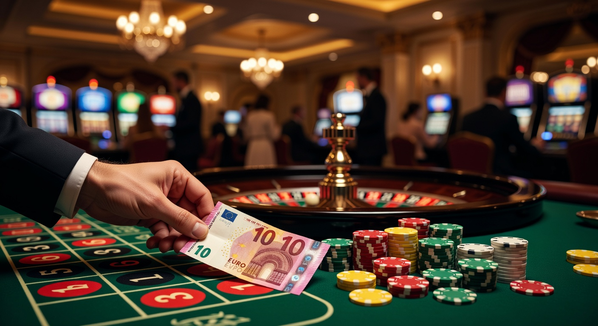
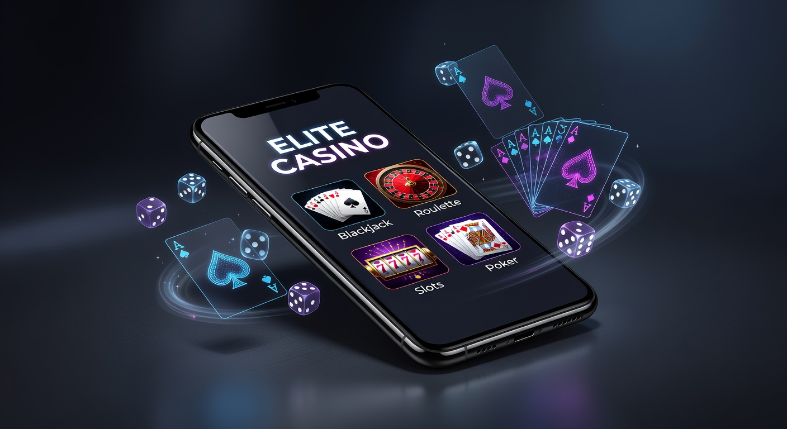
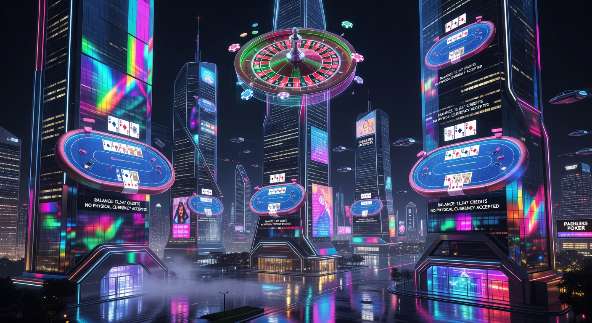
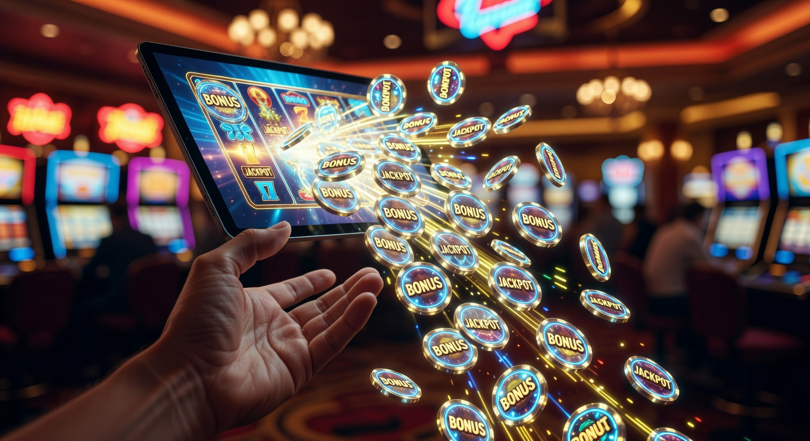
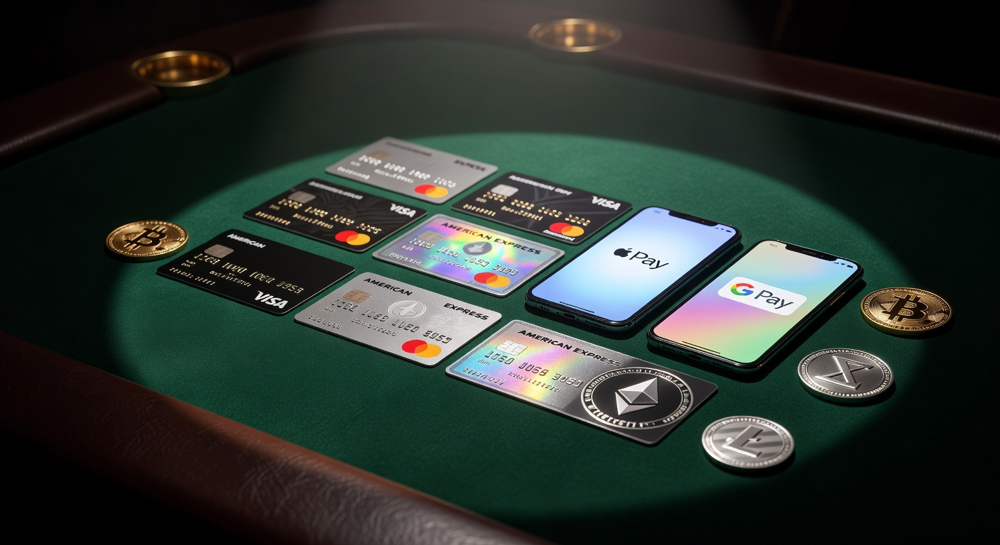

Casinò non AAMS deposito 10 euro
Il panorama del gioco d'azzardo digitale in Italia ha subito una trasformazione radicale nel corso del 2026. Con l'evoluzione delle tecnologie blockchain e l'integrazione di sistemi di pagamento sempre più granulari, la ricerca di un casinò non AAMS deposito 10 euro è diventata una priorità per migliaia di giocatori che desiderano flessibilità e sicurezza senza i vincoli burocratici imposti dalle licenze nazionali. Queste piattaforme internazionali offrono un accesso democratico al divertimento, permettendo di testare cataloghi immensi con un investimento iniziale estremamente contenuto.
Scegliere un casinò non AAMS deposito 10 euro non significa solo risparmiare, ma anche accedere a un ecosistema di promozioni che spesso superano per valore quelle del mercato locale. Nel 2026, l'interoperabilità tra diverse giurisdizioni ha permesso a questi siti di mantenere standard qualitativi altissimi, garantendo al contempo una libertà di transazione che include sia le valute fiat tradizionali che le più moderne criptovalute. In questo articolo esploreremo ogni dettaglio di questo mercato in continua espansione.
Per comprendere appieno il successo di queste piattaforme, è necessario guardare oltre la semplice soglia di ingresso. Un casinò non AAMS deposito 10 euro rappresenta oggi il punto di equilibrio ideale tra il gioco responsabile e la possibilità di vincite concrete, grazie a RTP (Return to Player) spesso più vantaggiosi rispetto alla media del settore. La trasparenza dei algoritmi provably fair e la rapidità dei prelievi completano un quadro che attira non solo i principianti, ma anche i veterani del settore.
Il panorama del gambling internazionale nel 2026
Nel 2026, il mercato del gioco d'azzardo online è più globale che mai. La distinzione tra operatori locali ed esteri si è assottigliata grazie all'adozione di standard di sicurezza universali. Molti utenti preferiscono un casinò non AAMS deposito 10 euro perché queste piattaforme sono in grado di offrire innovazioni tecnologiche, come la realtà aumentata e i tavoli live in 8K, con una velocità di implementazione superiore a quella degli operatori vincolati a lunghe procedure di certificazione nazionale.
L'anno 2026 segna anche il consolidamento di licenze alternative estremamente autorevoli. Sebbene la licenza ADM (ex AAMS) resti un punto di riferimento in Italia, molti giocatori si rivolgono a siti autorizzati dalla Malta Gaming Authority o dalla Curaçao eGaming per godere di limiti di puntata più elastici e di una varietà di giochi che non teme confronti. In questo contesto, un casinò non AAMS deposito 10 euro si pone come la porta d'accesso preferenziale per un'utenza internazionale ed esigente.
La crescita di queste piattaforme è supportata anche dalla crescente sfiducia verso sistemi di controllo eccessivamente invasivi. Molti giocatori cercano un casino senza documenti per proteggere la propria privacy, preferendo metodi di verifica meno onerosi che non richiedono l'invio costante di scartoffie digitali. Il 2026 è l'anno della semplificazione, e il casinò non AAMS deposito 10 euro ne è l'emblema principale.
Perché scegliere un operatore con ricarica minima ridotta

La scelta di un casinò non AAMS deposito 10 euro è spesso dettata da una strategia di gestione del rischio oculata. Iniziare con soli dieci euro permette di valutare l'interfaccia utente, la velocità del software e l'efficacia del servizio clienti senza impegnare capitali significativi. Nel mercato del 2026, dove l'offerta è vastissima, questa modalità di "test drive" è diventata una pratica comune tra i giocatori più esperti.
Inoltre, un casinò non AAMS deposito 10 euro consente di attivare numerosi bonus di benvenuto che raddoppiano o triplicano il potere d'acquisto iniziale. Molti operatori nel 2026 offrono pacchetti che includono una percentuale di ricarica e una serie di giri gratuiti, rendendo anche un piccolo versamento un'opportunità reale per accumulare vincite. Questa accessibilità è fondamentale per mantenere il gioco un'attività puramente ludica e sostenibile nel tempo.
Un altro vantaggio risiede nella varietà dei metodi di pagamento accettati. Un casinò non AAMS deposito 10 euro moderno permette di ricaricare il conto tramite micro-transazioni in Bitcoin o altre criptovalute, eliminando le commissioni bancarie che spesso rendono poco convenienti i piccoli depositi sui circuiti tradizionali. La flessibilità finanziaria è, dunque, uno dei pilastri del successo di questi portali internazionali.
Classifica dei migliori casinò non AAMS deposito 10 euro

Per aiutarvi nella scelta, abbiamo analizzato i portali più performanti del 2026. Ogni casinò non AAMS deposito 10 euro presente in questa lista è stato testato per affidabilità, velocità di pagamento e qualità del catalogo di giochi.
Millioner
Il brand Millioner si è imposto nel 2026 come leader assoluto per chi cerca un'esperienza premium con un budget contenuto. Questo casinò non AAMS deposito 10 euro offre un'interfaccia futuristica e un sistema di gamification che premia ogni singola giocata. Il loro bonus di benvenuto è particolarmente generoso per i nuovi iscritti.
Roulettino
Se la vostra passione sono i tavoli verdi, Roulettino è il casinò non AAMS deposito 10 euro che fa per voi. Specializzato in varianti esotiche della roulette, permette di sedersi ai tavoli live con puntate minime bassissime, rendendo i dieci euro di deposito estremamente duraturi durante le sessioni di gioco.
Wyns
L'innovazione è la parola chiave di Wyns. Questo casinò non AAMS deposito 10 euro integra perfettamente le criptovalute e offre una sezione dedicata alle scommesse virtuali di ultima generazione. La velocità di prelievo su questo portale è tra le migliori registrate nel 2026.
Kinbet
Kinbet combina l'anima del casinò con quella delle scommesse sportive. Come casinò non AAMS deposito 10 euro, offre una versatilità unica: con lo stesso budget è possibile provare le ultime novità di slot o puntare su eventi live internazionali con quote altamente competitive.
Dragonia
Immersivo e graficamente spettacolare, Dragonia è il casinò non AAMS deposito 10 euro preferito dagli amanti del fantasy. Il loro sistema di fedeltà permette di sbloccare premi crescenti già dal primo versamento, dimostrando che non servono grandi cifre per sentirsi un giocatore VIP nel 2026.
Dolly Casino
Dolly Casino continua a essere un punto di riferimento nel 2026 grazie alla sua estetica Art Déco e alla stabilità della sua piattaforma. In quanto casinò non AAMS deposito 10 euro, garantisce l'accesso a oltre 4000 titoli diversi, inclusi i giochi dei provider più famosi al mondo.
Sportaza
Sportaza non è solo sport. Questo casinò non AAMS deposito 10 euro offre una sezione dedicata al gioco d'azzardo tradizionale che è tra le più complete del mercato internazionale. La facilità di navigazione lo rende ideale per chi gioca prevalentemente da smartphone.
Rabona
Celebre per le sue collezioni di carte collezionabili digitali, Rabona si conferma un ottimo casinò non AAMS deposito 10 euro nel 2026. Il mix tra scommesse e slot machine crea un ambiente dinamico dove i bonus vengono erogati con una frequenza superiore alla media.
Nomini
Famoso per i suoi simpatici personaggi a forma di frutta, Nomini permette di scegliere il proprio bonus di benvenuto personalizzato. Come casinò non AAMS deposito 10 euro, offre una flessibilità che pochi altri possono eguagliare, permettendo di adattare l'offerta al proprio stile di gioco preferito.
Giocare senza scartoffie: la rivoluzione del 2026

Uno dei motivi principali per cui i giocatori italiani nel 2026 migrano verso un casinò non AAMS deposito 10 euro è la volontà di evitare lunghe e tediose procedure di registrazione. Il concetto di "giocare senza scartoffie" si è evoluto grazie a tecnologie come il Pay n Play e l'autenticazione tramite wallet di criptovalute. In molti casi, non è necessario caricare documenti d'identità per iniziare a divertirsi, rendendo l'esperienza immediata.
Le piattaforme estere hanno compreso che la velocità è un fattore critico di successo. Un casinò non AAMS deposito 10 euro moderno permette di completare l'iscrizione in meno di un minuto. Questo contrasta fortemente con i siti nazionali che spesso richiedono verifiche tramite SPID o l'invio di contratti firmati, rallentando l'accesso ai giochi di propria preferenza. La libertà operativa è il vero valore aggiunto del 2026.
Inoltre, l'assenza di burocrazia non significa mancanza di sicurezza. Un casinò non AAMS deposito 10 euro affidabile utilizza protocolli di crittografia avanzati e sistemi di intelligenza artificiale per monitorare transazioni sospette, garantendo che il fondo di gioco dell'utente sia sempre protetto, pur mantenendo un approccio snello e user-friendly.
Tipologie di bonus con un versamento di dieci euro

Molti utenti pensano erroneamente che un piccolo deposito precluda l'accesso alle promozioni. Al contrario, nel 2026, il casinò non AAMS deposito 10 euro ha perfezionato offerte scalabili che valorizzano ogni centesimo investito. Le strutture dei bonus sono pensate per dare slancio iniziale e prolungare il tempo delle sessioni.
Bonus di benvenuto e giri gratuiti
L'offerta classica di un casinò non AAMS deposito 10 euro prevede spesso un match bonus del 100% o 200%. Ad esempio, depositando 10 euro, si può iniziare a giocare con 20 o 30 euro totali. A questo si aggiungono spesso giri gratuiti (free spins) utilizzabili sulle di slot più popolari del momento, permettendo di vincere soldi veri senza costi aggiuntivi.
In alcuni casi eclatanti del 2026, abbiamo visto promozioni del tipo 100 fino a cifre molto alte, dove il primo scaglione si attiva proprio con la ricarica minima. Questo rende il casinò non AAMS deposito 10 euro estremamente competitivo rispetto ai colossi del mercato tradizionale, che spesso richiedono versamenti iniziali più consistenti per sbloccare i vantaggi reali.
Promozioni per i giocatori già registrati
La fedeltà è premiata regolarmente. Un casinò non AAMS deposito 10 euro di qualità offre ricariche settimanali, cashback sulle perdite e tornei gratuiti con montepremi in denaro. Nel 2026, molte piattaforme hanno introdotto programmi fedeltà dove i punti si accumulano velocemente, trasformandosi in ulteriori bonus di gioco o gadget tecnologici.
Metodi di pagamento per transazioni rapide

La varietà dei sistemi di pagamento è ciò che rende davvero funzionale un casinò non AAMS deposito 10 euro. Nel 2026, la velocità è tutto: i giocatori non sono disposti ad aspettare giorni per vedere accreditato il proprio denaro o per ricevere una vincita sul proprio conto corrente.
Criptovalute e Bitcoin
L'uso di Bitcoin, Ethereum e altre criptovalute è diventato lo standard nel casinò non AAMS deposito 10 euro moderno. Queste valute digitali permettono transazioni istantanee con commissioni prossime allo zero, il che è ideale quando si effettuano depositi di soli 10 euro. Inoltre, garantiscono un livello di privacy superiore, poiché non appaiono nell'estratto conto bancario tradizionale.
Portafogli elettronici e carte di credito
Nonostante l'ascesa delle crypto, i portafogli elettronici come Skrill e Neteller rimangono popolarissimi nel 2026. Qualsiasi casinò non AAMS deposito 10 euro degno di nota accetta questi metodi, insieme alle carte di credito dei circuiti Visa e Mastercard. La comodità di questi strumenti risiede nella loro universalità e nella protezione dell'acquirente integrata, che offre un ulteriore strato di serenità durante le transazioni.
Licenze internazionali e sicurezza del giocatore
Operare al di fuori del circuito ADM non significa operare nell'illegalità. Un casinò non AAMS deposito 10 euro serio espone chiaramente i dettagli della propria licenza. Nel 2026, le autorità di regolamentazione internazionali hanno inasprito i controlli per garantire che il gioco rimanga equo e trasparente per tutti gli utenti, indipendentemente dalla loro localizzazione geografica.
La licenza rilasciata dalla Malta Gaming Authority è una delle più prestigiose, seguita dalla UK Gambling Commission per il mercato britannico e dalla licenza di Curaçao eGaming, molto comune tra i siti che accettano criptovalute. Scegliere un casinò non AAMS deposito 10 euro regolamentato da questi enti assicura che i software di gioco siano regolarmente testati da laboratori indipendenti come eCOGRA o iTech Labs.
Secondo le linee guida internazionali sul gioco, consultabili su portali autorevoli come Wikipedia, la regolamentazione è fondamentale per prevenire frodi. Pertanto, prima di registrarvi su un casinò non AAMS deposito 10 euro, verificate sempre il numero di licenza nel footer del sito. Nel 2026, la trasparenza è il miglior biglietto da visita per qualsiasi operatore internazionale.
Vantaggi e svantaggi delle piattaforme estere
Come ogni scelta nel mondo del gambling, anche optare per un casinò non AAMS deposito 10 euro comporta dei pro e dei contro che vanno valutati attentamente. Nel 2026, l'ago della bilancia pende decisamente verso i vantaggi, ma è doveroso essere consapevoli di ogni aspetto.
- Vantaggi:
- Accessibilità immediata con deposito minimo di soli 10 euro.
- Assenza di limiti rigidi sulle puntate e sui volumi di gioco giornalieri.
- Ampia scelta di criptovalute per depositi e prelievi anonimi.
- Bonus di benvenuto molto più alti rispetto ai siti italiani.
- Procedure di verifica KYC più snelle e veloci.
- Svantaggi:
- Mancanza della protezione diretta da parte dell'autorità italiana (ADM).
- In alcuni casi, l'assistenza clienti potrebbe non parlare italiano (anche se nel 2026 la traduzione AI in tempo reale ha quasi risolto questo problema).
- Possibile necessità di utilizzare strumenti come VPN per accedere ad alcuni domini.
Un casinò non AAMS deposito 10 euro rappresenta la soluzione perfetta per chi ha già esperienza nel settore e sa come muoversi in autonomia. La responsabilità personale è fondamentale quando si esce dai confini del mercato protetto nazionale, ma le ricompense in termini di divertimento e opportunità sono decisamente superiori.
Casinò Deposito 10 Euro: Confronto tra i Top Brand
Per facilitare la vostra decisione, abbiamo preparato una tabella comparativa che riassume le caratteristiche principali dei migliori operatori del 2026 che accettano un deposito minimo contenuto.
| Brand | Deposito Minimo | Bonus Principale | Metodo Top | Valutazione |
|---|---|---|---|---|
| Millioner | 10€ | 200% fino 500€ | Bitcoin | 4.9/5 |
| Roulettino | 10€ | 100% + 50 giri gratuiti | Visa/Mastercard | 4.7/5 |
| Wyns | 10€ | Bonus Crab + 100% | Skrill/Neteller | 4.8/5 |
| Kinbet | 10€ | 100 fino a 300€ | Litecoin | 4.6/5 |
| Dragonia | 10€ | Pacchetto fino 500€ | Ethereum | 4.7/5 |
Questa tabella evidenzia come ogni casinò non AAMS deposito 10 euro cerchi di distinguersi offrendo qualcosa di unico. Che si tratti di un bonus elevato o dell'accettazione di una specifica criptovaluta, la competizione nel 2026 avvantaggia solo ed esclusivamente l'utente finale.
Catalogo giochi: dalle slot machine al live casino
Il cuore pulsante di ogni casinò non AAMS deposito 10 euro è la sua libreria di giochi. Nel 2026, la varietà è sbalorditiva, con titoli che spaziano dai classici intramontabili alle ultime innovazioni tecnologiche che fondono il gaming tradizionale con elementi dei videogiochi moderni.
Le sezioni di slot sono le più ricche: migliaia di titoli con temi che vanno dall'antico Egitto al cyberpunk. Molti siti collaborano con decine di fornitori diversi, garantendo una varietà che un casinò fisico non potrebbe mai offrire. Grazie al deposito minimo di dieci euro, è possibile provare moltissime macchine diverse puntando pochi centesimi per ogni spin.
I giochi di carte e il live casino hanno visto un'evoluzione incredibile nel 2026. Partecipare a una sessione di Blackjack o Baccarat con croupier dal vivo è un'esperienza immersiva, trasmessa in alta definizione da studi professionali. Un casinò non AAMS deposito 10 euro di alto livello permette di accedere a questi tavoli con limiti di ingresso estremamente popolari, democratizzando l'esperienza del casinò di lusso.
Non mancano poi le piattaforme emergenti come Wildtokyo Casinò, Astromania Casinò e Diva Spin Casinò, che nel 2026 si sono distinte per l'introduzione di giochi "crash" e titoli basati sulla blockchain. Anche Lunubet Casinò e Spinempire Casinò offrono cataloghi vastissimi che includono tornei di slot con premi garantiti, accessibili anche a chi ha effettuato solo un deposito minimo.
Il concetto di Bonus Crab nelle nuove piattaforme
Una delle novità più interessanti del 2026 nel mondo dei casinò non AAMS deposito 10 euro è l'introduzione del Bonus Crab. Si tratta di un gioco interattivo, simile alle macchinine con il gancio che si trovano nei luna park, che permette di pescare premi aggiuntivi come denaro bonus, giri gratuiti o monete fedeltà.
Questa meccanica di gioco aggiuntiva viene spesso offerta come incentivo dopo il primo versamento. In un casinò non AAMS deposito 10 euro, il Bonus Crab rappresenta un modo divertente e originale per ottenere un vantaggio extra fin da subito. È la dimostrazione di come queste piattaforme stiano cercando di rendere l'intera esperienza di gioco più coinvolgente e meno monotona rispetto al passato.
L'integrazione di questi elementi ludici all'interno delle promozioni standard è diventata una caratteristica distintiva dei migliori operatori internazionali. Chi sceglie un casinò non AAMS deposito 10 euro nel 2026 si aspetta non solo di scommettere, ma di essere intrattenuto a 360 gradi da un'interfaccia ricca di stimoli e sorprese.
Sicurezza e KYC nelle piattaforme senza licenza ADM
La sicurezza rimane un pilastro fondamentale anche per chi opera come casinò non AAMS deposito 10 euro. Contrariamente a quanto si potrebbe pensare, la mancanza della licenza italiana non equivale a un far west normativo. Gli operatori internazionali nel 2026 adottano rigorosi protocolli KYC (Know Your Customer) per prevenire il riciclaggio di denaro, sebbene questi siano spesso meno invasivi per i piccoli importi.
Spesso, un casinò non AAMS deposito 10 euro permette di giocare immediatamente e richiede la verifica dell'identità solo al momento del primo prelievo consistente. Questo approccio bilancia perfettamente la necessità di sicurezza con il desiderio di immediatezza del giocatore moderno. Le tecnologie di riconoscimento biometrico e l'analisi dei dati via AI rendono questi controlli quasi invisibili nel 2026.
Per garantire la massima protezione, è consigliabile consultare fonti informative ufficiali sulla sicurezza informatica, come quelle fornite da BBC Technology, che spesso trattano i temi della crittografia dei dati online. Un casinò non AAMS deposito 10 euro che investe in sicurezza è un sito che guarda al futuro e che merita la fiducia dei propri iscritti.
Differenze tra licenze MGA, Curaçao e UKGC
Comprendere la giurisdizione di un casinò non AAMS deposito 10 euro è essenziale per valutarne l'affidabilità. La licenza MGA (Malta) è considerata tra le più protettive per i giocatori europei, poiché impone standard severi sulla separazione dei fondi e sul gioco responsabile. Molti dei migliori siti del 2026 operano sotto questa egida.
La licenza di Curaçao eGaming è invece la preferita dai siti che puntano sull'innovazione tecnologica e sulle criptovalute. Un casinò non AAMS deposito 10 euro con questa licenza tende ad avere meno restrizioni geografiche e bonus più aggressivi. Infine, la UK Gambling Commission (UKGC) è nota per essere la più rigida in assoluto, garantendo un ambiente di gioco estremamente controllato, sebbene più focalizzato sul mercato anglosassone.
Qualunque sia la licenza scelta, un casinò non AAMS deposito 10 euro serio fornirà sempre un link diretto al validatore ufficiale dell'ente regolatore. Nel 2026, la verifica della licenza è diventata un'operazione di pochi secondi che ogni giocatore consapevole dovrebbe compiere prima di ogni deposito.
Esperienza utente e gioco da mobile
Nel 2026, la maggior parte delle sessioni di gioco avviene tramite dispositivi mobili. Un casinò non AAMS deposito 10 euro deve quindi offrire un'app impeccabile o un sito web perfettamente ottimizzato per browser mobile. La velocità di caricamento delle slot e la stabilità dei flussi video del live casino sono parametri fondamentali per il successo di un operatore.
Le interfacce sono diventate estremamente intuitive, con menu a comparsa e sistemi di ricerca avanzati che permettono di trovare i propri giochi di fiducia in pochi tocchi. Molti casinò non AAMS deposito 10 euro offrono anche bonus esclusivi per chi scarica la loro applicazione ufficiale o utilizza i sistemi di pagamento mobile come Apple Pay o Google Pay, rendendo il deposito di dieci euro ancora più semplice e immediato.
La tecnologia 5G, ormai onnipresente nel 2026, ha eliminato ogni tipo di latenza, permettendo di giocare al proprio casinò non AAMS deposito 10 euro preferito in qualsiasi luogo, senza cali di performance. Questa libertà di movimento è uno dei motivi per cui il mercato internazionale continua a crescere a ritmi vertiginosi.
Gestione del budget e gioco responsabile
Anche se un casinò non AAMS deposito 10 euro permette di giocare con cifre contenute, la gestione del budget rimane essenziale. Il gioco d'azzardo deve essere vissuto come un divertimento e mai come una fonte di reddito. Nel 2026, le migliori piattaforme integrano strumenti di auto-limitazione che permettono di impostare tetti di spesa giornalieri o settimanali direttamente dal pannello utente.
È importante non inseguire mai le perdite. Se i dieci euro depositati su un casinò non AAMS deposito 10 euro finiscono, è meglio fermarsi e riprovare in un altro momento piuttosto che continuare a versare denaro fuori controllo. La consapevolezza è la miglior difesa contro il gioco patologico, e molte organizzazioni internazionali offrono supporto gratuito, come indicato su siti di pubblica utilità come Gov.uk.
Un operatore responsabile nel 2026 mette sempre in primo piano il benessere del cliente. Se un casinò non AAMS deposito 10 euro non offre strumenti di protezione o link a enti di supporto, è meglio diffidare e scegliere una piattaforma più etica e trasparente.
Conclusioni sulla scelta del sito ideale
In conclusione, il 2026 offre opportunità incredibili per chi sa navigare nel mondo dei casinò non AAMS deposito 10 euro. La combinazione di versamenti minimi bassi, tecnologie all'avanguardia e bonus generosi rende queste piattaforme estremamente attraenti per il pubblico italiano ed internazionale. La chiave del successo risiede nella scelta di operatori licenziati e trasparenti, capaci di garantire divertimento in totale sicurezza.
Che siate attratti dalla velocità dei pagamenti in Bitcoin, dalla curiosità verso il Bonus Crab o semplicemente dalla voglia di esplorare nuovi cataloghi di slot, un casinò non AAMS deposito 10 euro rappresenta il punto di partenza ideale. Con un investimento minimo, potrete accedere a un mondo di intrattenimento senza confini, gestendo il vostro budget in modo intelligente e consapevole.
Ricordate sempre di giocare con moderazione e di scegliere solo i brand che hanno dimostrato nel tempo di meritare la fiducia degli utenti, come quelli analizzati in questa guida. Il futuro del gioco d'azzardo nel 2026 è qui, ed è più accessibile che mai grazie al casinò non AAMS deposito 10 euro.
FAQ – Casino non AAMS
Di seguito rispondiamo alle domande più frequenti che riceviamo dai nostri lettori interessati a questo settore nel 2026.
È sicuro giocare su un casinò non AAMS deposito 10 euro?
Sì, a condizione che il sito possieda una licenza internazionale valida come quella di Malta o Curaçao. Questi enti garantiscono che il casinò non AAMS deposito 10 euro rispetti gli standard di equità e sicurezza necessari per proteggere i giocatori.
Quali sono i vantaggi dei casinò senza documenti?
Il vantaggio principale è la velocità. Un casinò non AAMS deposito 10 euro che permette di giocare senza inviare documenti immediatamente consente di iniziare la sessione in pochi secondi, mantenendo un livello di privacy più elevato rispetto ai siti tradizionali.
Posso vincere soldi veri con un deposito di soli 10 euro?
Certamente. Molti giocatori nel 2026 utilizzano il casinò non AAMS deposito 10 euro per attivare bonus e giri gratuiti che possono portare a vincite reali consistenti, a patto di rispettare i requisiti di puntata previsti dalla promozione.
Le criptovalute sono accettate in tutti i casinò internazionali?
La stragrande maggioranza dei casinò non AAMS deposito 10 euro nel 2026 accetta Bitcoin e altre monete digitali, rendendole uno dei metodi più rapidi ed economici per ricaricare il proprio conto di gioco.
Cos'è il Bonus Crab?
Il Bonus Crab è una funzione promozionale tipica di alcuni casinò non AAMS deposito 10 euro del 2026. Consiste in un gioco di abilità che permette di ottenere premi extra come giri gratis o crediti di gioco aggiuntivi dopo aver effettuato un deposito.

Appassionato di turismo alpino e attività outdoor. Guida escursionistica certificata con esperienza decennale sulle Alpi italiane.